🇫🇷 Франція vs Велика Британія 🇬🇧
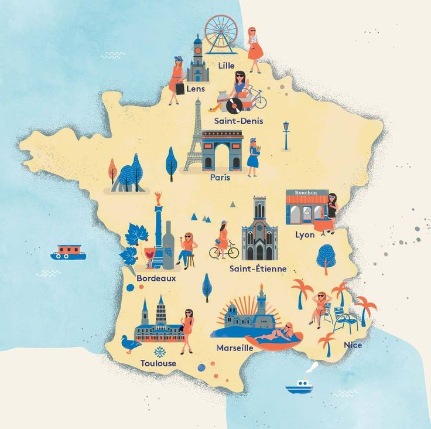
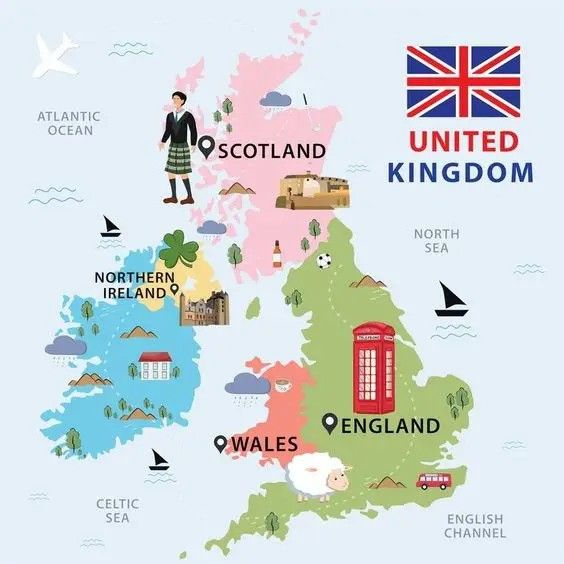
| Показник | Французька Республіка | Сполучене Королівство |
|---|---|---|
| Форма правління | Президентсько-парламентська республіка | Конституційна монархія |
| Площа | 551,6 тис. км² | 244,1 тис. км² |
| Населення (2024) | ~66,5 млн осіб | ~69,1 млн осіб |
| Столиця | Париж | Лондон |
| ЕГП | Центральна вісь розвитку ЄС, вихід до Атлантики та Середземного моря. | Острівне положення, зв'язок з материком через Євротунель. |
Спільні риси
|
||
Ключова відмінність: Brexit
|
||
Порівняння ВВП
Структура зайнятості
Франція
Велика Британія
Вікова структура
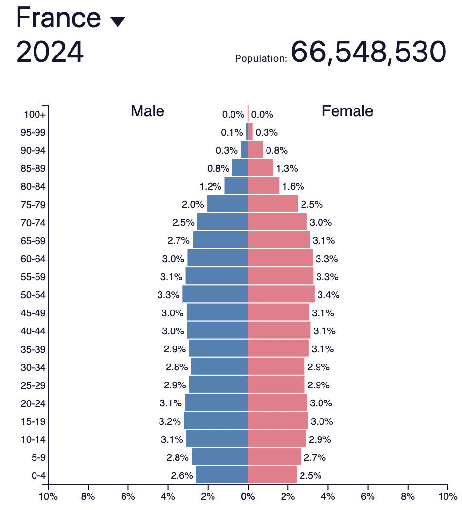
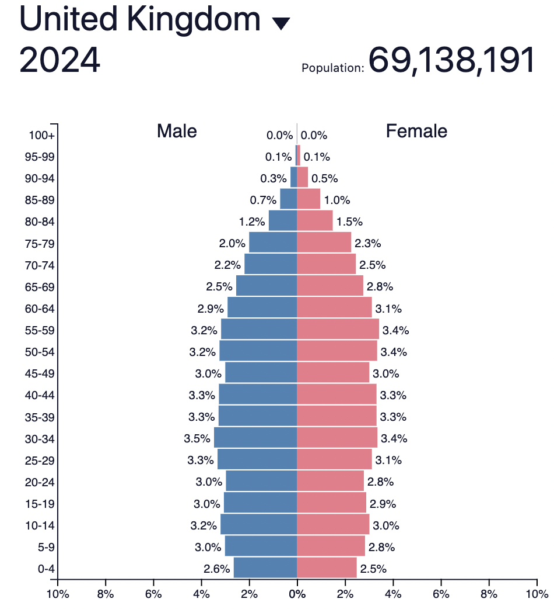
Третинний сектор (послуги)
Франція (туризм та технології)
- Світовий лідер з туризму: Париж, Лазуровий берег, Альпи.
- Транспорт: Високошвидкісні потяги (TGV).
- Наука: Технологічний парк Софія-Антиполіс.
Велика Британія (фінанси та освіта)
- Світовий фінансовий центр: Лондон-Сіті (банки, біржі).
- Освіта: Найпрестижніші університети світу (Оксфорд, Кембридж).
- Транспорт: Аеропорт Хітроу (Лондон) – один з найбільших хабів світу.
Вторинний сектор (промисловість)
Франція (АЕС та люкс)
- Енергетика: Лідерство АЕС (понад 2/3 енергії).
- Машинобудування: Авіакосмічне (літаки Airbus), автомобілі (Renault, Peugeot).
- Сектор люкс: світовий центр моди (Dior), парфумерії.
Велика Британія (нафта та фармацевтика)
- Енергетика: Власні нафта і газ (шельф Північного моря), розвиток ВЕС (вітрові).
- Машинобудування: Високотехнологічне (двигуни Rolls-Royce).
- Хімія: Фармацевтика (AstraZeneca).
Первинний сектор (аграрний сектор)
Франція (фокус: рослинництво)
- Місце в ЄС: Найбільший виробник та експортер сільгосппродукції.
- Продукція: Пшениця, кукурудза, виноград (вино), сири.
Велика Британія (фокус: тваринництво)
- Особливості: Сприятливі умови (вологий клімат) для пасовищ.
- Продукція: Молочне та м'ясо-молочне скотарство, вівчарство.
Звʼязки з Україною
| Сфера | Французька Республіка | Сполучене Королівство |
|---|---|---|
| Економічні зв'язки |
|
|
| Політична та військова підтримка (після 2022) |
|
|
Цікаві факти
1
Тунель під Ла-Маншем (Євротунель) – найдовший підводний тунель у світі (50.5 км). Він з'єднує Фолкстон (Англія) і Кале (Франція) лише за 35 хвилин.
2
Близько 300 років (з 1066) французька мова була офіційною мовою Англії! Саме тому в англійській мові так багато слів французького походження.
3
Британія – країна чаю. Британці випивають 100 мільйонів чашок чаю щодня, що майже в 25 разів більше, ніж американці.
4
У Франції виробляється понад 1200 видів сиру. Якщо їсти по одному новому сорту щодня, знадобиться більше трьох років, щоб скуштувати їх усі.
Чий символ?
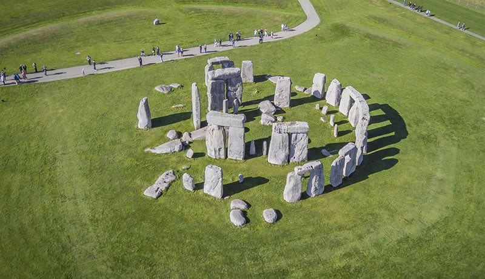

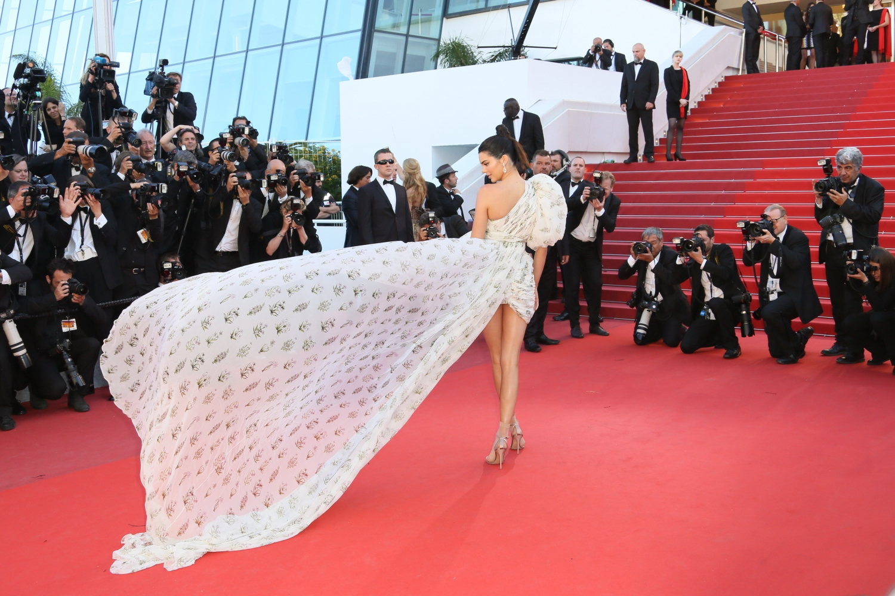
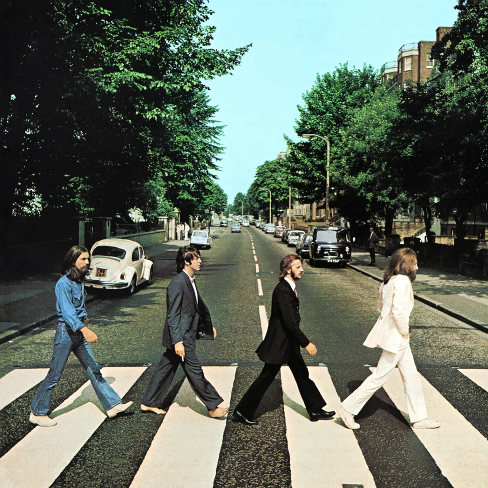
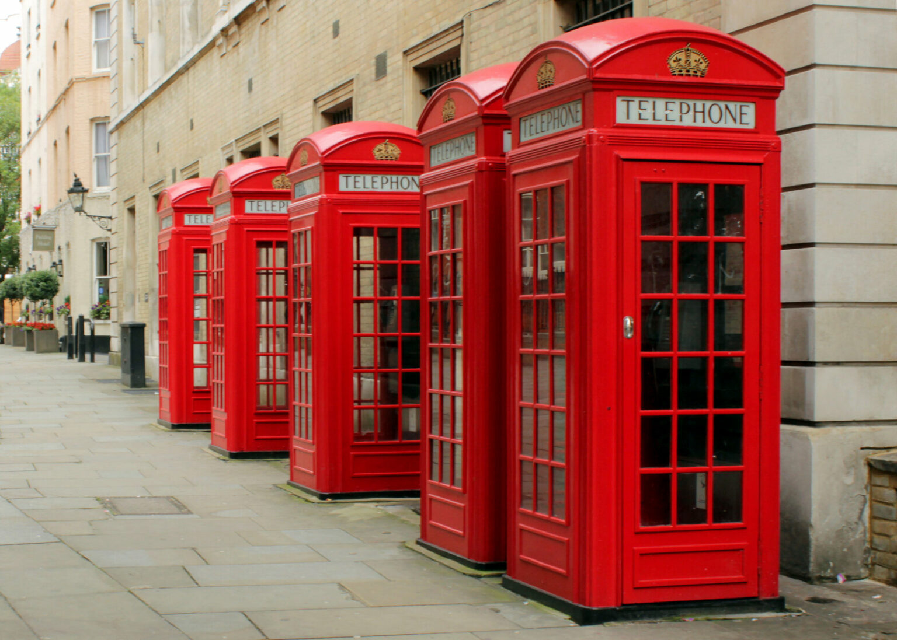
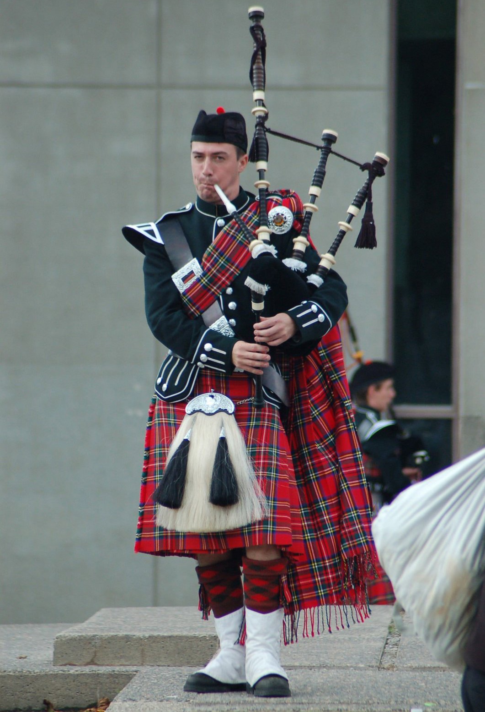
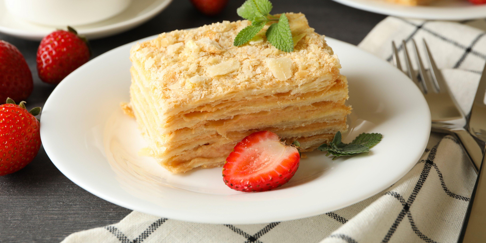
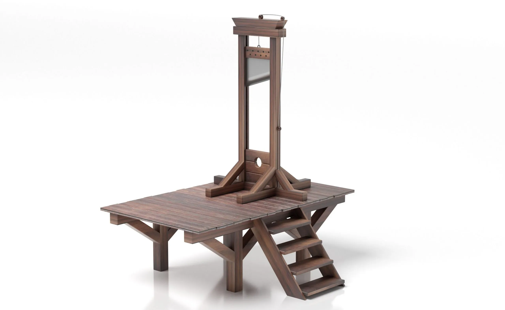